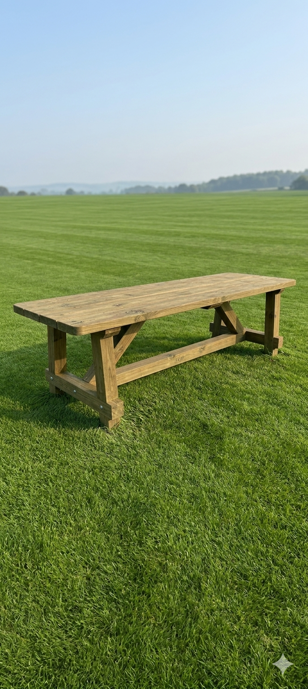
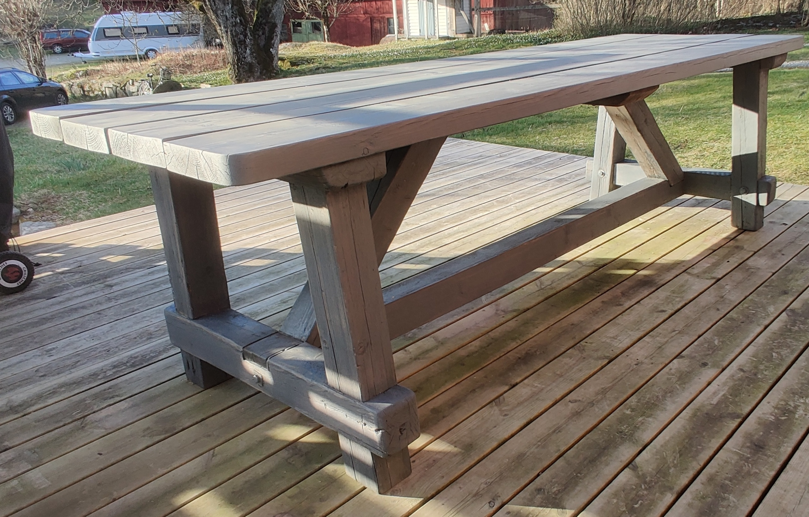
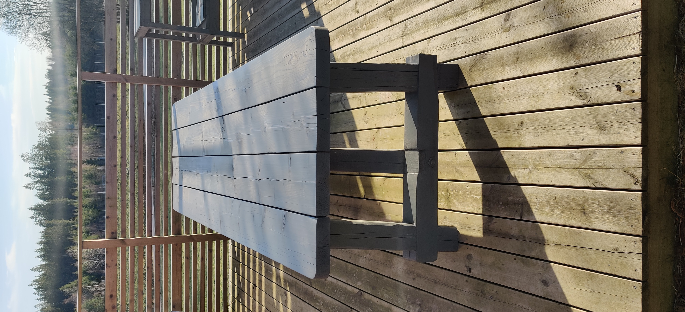
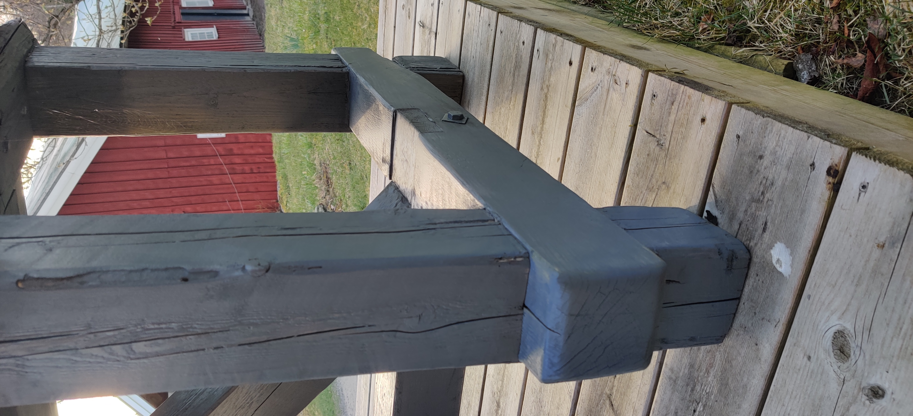
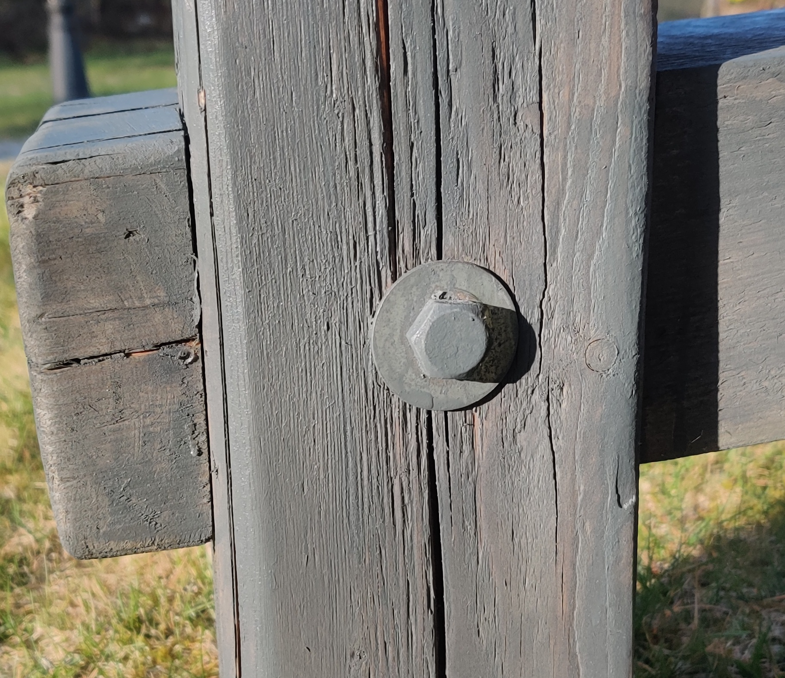
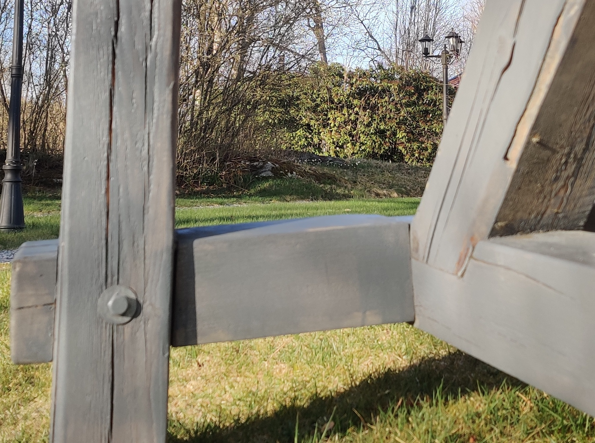

Gedigen trebockskonstruktion.
Välj utförande — oljat eller tryckimpregnerat.



Det tryckimpregnerade lantbordet behandlas med en klassisk gråton som harmonierar med det nordiska klimatet och den svenska landsbygdens estetik. Grunden är tryckimpregnerat virke — vilket ger ett naturligt skydd mot fukt och röta. Den yttersta lasyrbehandlingen ger karaktär och djup, och förstärks med åren.
Det oljade lantbordet låter det naturliga virket tala för sig självt. En penetrerande träolja bevarar fibrernas naturliga guldton och skyddar mot fukt utan att täcka träets karaktär. Resultatet är ett levande, organiskt utseende som varje år berättar en ny historia.
Lantbordets bas vilar på en klassisk trebockskonstruktion — en tidlös design inspirerad av medeltida klosterbord och svenska bondgårdar. Diagonala stöttor fördelar vikten längs hela bordets längd och ger en stabilitet som inte kan uppnås med konventionella bordben.
Varje fog är noggrant tillpassad och fäst med galvaniserade bultar. Virket är kraftigt dimensionerat — inget här är sparsmakat. Det syns i hantverket, och det känns när man sätter handen på bordet.



| Tryckimpregnerad | Oljad | |
|---|---|---|
| Skydd mot fukt | ✓ Utmärkt, inbyggt | ✓ Mycket bra med olja |
| Underhåll | Lågt — lasyr vart 3–5 år | Medel — olja en gång/säsong |
| Utseende | Gråton, nordisk karaktär | Varm naturton, organisk |
| Åldras | Silvrar naturligt med åren | Vacker patina, djupnar |
| Rekommenderas för | Utemiljö, helårsklimat | Altan, restaurang, event |